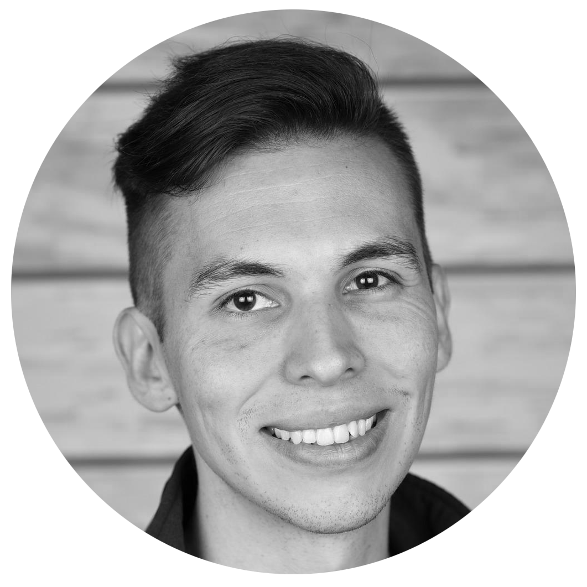

Hi, I'm Raymond,
a software engineer specialized in
both front-end and back-end.
I specialize in creating software for clients ranging from individuals and small-businesses all the way to large enterprise corporations. I prefer to keep learning, continue challenging myself, and do interesting things that matter. My abundant energy fuels me in the pursuit of many interests, hobbies, areas of study and artistic endeavors. I’m a fast learner, able to pick up new skills and juggle different projects and roles with relative ease.
I like to develop expertise in a number of areas over the course of my life and career. I currently work remotely and have a full-time commitment at BetterVacations. Outside of my commitments I work with a select freelance client base. Feel free to get in touch by any means of communication.